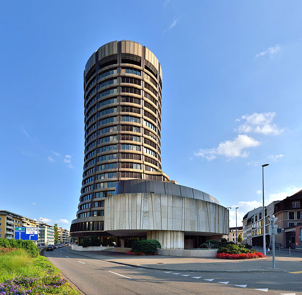

Zúrich

Relaciones exteriores e instituciones internacionales
Tradicionalmente, Suiza evita todas las alianzas que puedan implicar acción militar, política o económica y ha sido neutral desde su expansión en 1515. No fue hasta 2002 cuando Suiza se convirtió en miembro completo de la ONU, pero fue el primer Estado en adherirse a la organización después de un referéndum. Suiza mantiene relaciones diplomáticas con casi todas las naciones e históricamente ha actuado como intermediario de otros Estados. Suiza no es miembro de la Unión Europea; la población suiza ha rechazado la membresía desde principios de la década de 1990. Sin embargo, desde 2005 forma parte del espacio de Schengen.
Muchos organismos internacionales que tienen su sede en Suiza, fueron fundados en otros países y tuvieron sus sedes en su país de fundación y en otros países, hasta llegar finalmente a Suiza, donde sus sedes radicarán permanentemente y nunca más se cambiarán a otro país, debido a su política de neutralidad; claros ejemplos son la FIFA y el COI, que fueron fundados en París (Francia) pero decidieron cambiar su sede de origen a Suiza (la FIFA fundada en París se trasladó a Zúrich y el COI también fundado en París, a Lausana).
| Sede | Residencia | Imagen |
| FIFA |
Zúrich |
|
| Comité internacional de la Cruz Roja | Ginebra | |
| ONU | Ginebra | |
| Banco de Pagos Internacionales | Basilea |  |